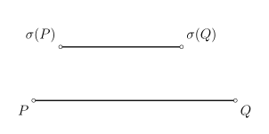
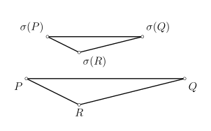
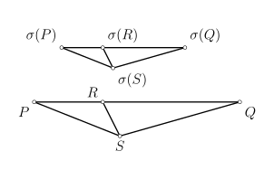

Hình học affine
Phần 1: Trực giác hình học
Liên thuộc và song song
Trong bài viết này, ta sẽ cố gắng xây dựng mặt phẳng một cách tự nhiên nhất có thể. Đầu tiên, bạn mong đợi gì từ một mặt phẳng? Ta cần các điểm và các đường thẳng. Như vậy, đầu tiên ta cần một tập hợp $\mathscr{P}$, nơi ta gọi các phần tử của nó là các điểm, và một số tập con đặc biệt của $\mathscr{P}$ được gọi là đường thẳng. Giống như những gì bạn được học từ bé, ta kỳ vọng rằng $\mathscr{P}$ có tính chất sau:
Với hai điểm $A,B$ phân biệt của $\mathscr{P}$, ta ký hiệu đường thẳng đi qua chúng là $\overline{AB}$.
Chỉ với tiên đề này, ta vẫn còn để lọt những trường hợp tầm thường hoặc những trường hợp "kỳ dị", chẳng hạn như mặt phẳng rỗng, mặt phẳng một điểm và không có đường thẳng, hoặc là mặt
phẳng chỉ có một đường thẳng chứa tất cả các điểm. Để loại bỏ chúng, ta cần thêm tiên đề sau:
Một cách trực giác, tiên đề này nói rằng "thứ nguyên" (hay "chiều") của mặt phẳng phải lớn hơn $1$. Tiên đề ta chuẩn bị xây dựng sau đây buộc mặt phẳng phải có số chiều là $2$.
Trong không gian ba chiều $\mathbb{R}^{3}$, qua một điểm nằm ngoài một đường thẳng, ta vẽ được vô số đường thẳng song song với đường thẳng đã cho. Điều này cho ta trực giác về số chiều, như đã bàn ở trên. Ta gọi mặt phẳng thỏa mãn ba tiên đề này là mặt phẳng Playfair.
Các tính chất
Trên mặt phẳng Playfair, ta đã làm được một vài thứ có ý nghĩa.
Chứng minh
Nhờ có tiên đề liên thuộc số $2$, ta biết rằng có ít nhất ba chùm song song. Một cách khéo léo, ta tìm được cách đánh giá số điểm trên một đường thẳng:
Chứng minh
Các phép biến hình
Khi nghiên cứu một đối tượng, ta không quan sát riêng lẻ từng đối tượng mà đặt chúng trong mối quan hệ qua lại. Hình học cũng thế, có mật phẳng thì sẽ phải có ánh xạ giữa các mặt phẳng. Trước hết, ta sẽ tìm hiểu các ánh xạ đặc biệt từ một mặt phẳng (Playfair) vào chính nó.

Khi đọc đến đây, sẽ rất hữu ích khi bạn nghĩ trong đầu phép tịnh tiến hay vị tự, vì đó chính xác là những gì ta sẽ làm, ít nhất là về trực giác. Chú ý rằng ta không viết là $\overline{\sigma(P)\sigma(Q)}\parallel\overline{PQ}$, vì ta không yêu cầu $\sigma(P)\neq\sigma(Q)$.
Chứng minh


Giả sử $\sigma(R_{1})=\sigma(R_{2})=T$. Nếu $R_{1}\notin\overline{PQ}$ thì do $\overline{PR_{2}}\parallel\overline{\sigma(P)T}\parallel\overline{PR_{1}}$ và $\overline{QR_{1}}\parallel\overline{QR_{2}}$ nên $R_{1}=R_{2}$. Còn nếu $R,S\in\overline{PQ}$ thì bằng cách sử dụng điểm $X\notin\overline{PQ}$, ta có $\overline{XR}\parallel\overline{XS}$.
Cuối cùng, giả sử $\sigma(P)=\sigma(Q)$. Nếu tồn tại $R$ sao cho $\sigma(R)\neq\sigma(P)$ thì theo ý trên, $\sigma$ là một song ánh nên $P=Q$, mâu thuẫn. Vậy giả sử là sai và ta có kết luận.
Như vậy, để xác định một phép co giãn nào đó ta cần biết ảnh của nó tại hai điểm phân biệt. Nhưng hãy lưu ý rằng điều đó không có nghĩa là với hai điểm $R,S$ cho trước thì luôn tồn
tại một phép co giãn biến $P$ thành $R$ và biến $Q$ thành $S$, kể cả khi $S$ nằm trên đường thẳng qua $R$ và song song với $PQ$. Bạn đọc nào có hứng thú có thể tìm hiểu về mặt
phẳng Moulton, nó là một phản ví dụ.
Tiếp theo, ta cố gắng đi phân loại các phép co giãn. Ta bắt đầu với nhận xét sau, thực ra chỉ là hệ quả của mệnh đề ở trên.
- Phép co giãn $\sigma$ là suy biến;
- Phép co giãn $\sigma$ là phép đồng nhất;
- Phép co giãn $\sigma$ có đúng một điểm bất động, và điểm bất động đó thuộc tất cả các vết của tất cả các điểm. Trong trường hợp này, ta gọi $\sigma$ là một phép vị tự tâm $P$.
- Phép co giãn $\sigma$ không có điểm bất động nào, và tất cả các vết đều song song với nhau. Trong trường hợp này, ta gọi $\sigma$ là một phép tịnh tiến, và chùm các vết của $\sigma$ được gọi là phương của $\sigma$.
Chứng minh
Nếu $\sigma$ có đúng một điểm bất động, giả sử là $P$, thì ta chỉ cần chứng minh mỗi điểm $X\neq P$ đều có vết đi qua $P$. Điều đó là đúng vì ta có $$\overline{PX}\parallel\overline{\sigma(P)\sigma(X)}=\overline{P\sigma(X)}.$$
Nếu $\sigma$ không có điểm bất động nào, giả sử hai điểm $P,Q$ mà các vết của chúng có điểm chung $X$. Vì ảnh của ba điểm thẳng hàng qua một phép co giãn không suy biến cũng là thẳng hàng, nên $\sigma(X)$ cũng thuộc vết của $\sigma(P)$ và $\sigma(Q)$, hay cũng chính là vết của $P$ và $Q$. Theo tiên đề liên thuộc đầu tiên, vết của $P,Q,X$ là cùng một đường thẳng. Vậy hai vết bất kỳ ứng với $\sigma$ đều song song với nhau.